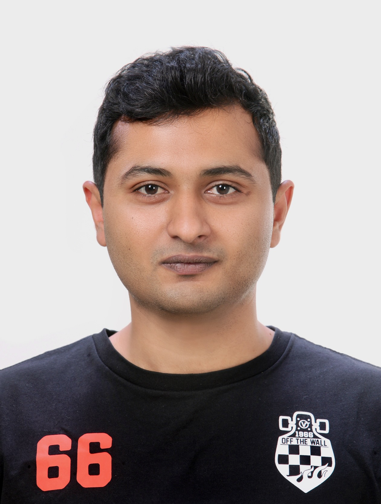

Edge-AI on NPUs
Quantization, packaging, and optimized inference on automotive and industrial NPUs — TDA4VM, Hailo-15, R-Car, Rockchip, Mobilint Aries, DeepX M1, and more.
Computer vision, MLOps & edge-AI engineer building deep-learning systems where hardware, latency, and reliability actually matter — from driver monitoring to medical imaging.

I build, optimize, and ship deep-learning vision systems on embedded NPUs and in the cloud — across driver & occupant monitoring, road perception, industrial safety, and medical imaging. On TI TDA4VM, Hailo-15, Renesas R-Car, Rockchip, Mobilint Aries, and DeepX M1 targets, I've led a seven-engineer team, built Docker-based MLOps pipelines, and delivered up to 10× faster inference than Python laptop baselines. Published researcher with six peer-reviewed papers.
Quantization, packaging, and optimized inference on automotive and industrial NPUs — TDA4VM, Hailo-15, R-Car, Rockchip, Mobilint Aries, DeepX M1, and more.
Face detection, landmarks, gaze, and drowsiness on embedded IR camera systems, aligned to Euro NCAP-oriented DMS requirements.
Docker-based CI/CD for model release consistency, Yocto SDK customization, and reproducible embedded deployment pipelines.
Segmentation and classification research, including 3D-CNN diagnosis on brain MRI and active-contour methods. Six peer-reviewed papers.
Advised an in-house AI product team on a dental-scan segmentation product, end to end.
Brought the iSafeGuard industrial-safety platform onto embedded AI hardware.
Led seven engineers across model optimization, deployment, and integration for automotive AI programs delivered to Hyundai, Kia, and LG Display.
Took a medical-imaging classifier from research to a regulated, cloud-native deployment.
First-author IEEE Access work on active-contour and dilated-convolution methods for inhomogeneous image segmentation. Contributed to an NRF-funded brain-stroke image-generation and segmentation project using GANs, and to a National Information Society Agency maritime object-detection dataset.
Built U-Net-based 2D brain-MRI segmentation experiments and ran transfer-learning comparisons across CNN baselines; collected and labeled an offline-signature recognition dataset for downstream verification.
Thesis: Active Contour Model for Image Segmentation with Dilated Convolution Filter. Research in image segmentation and medical imaging, including 3D-CNN diagnosis on brain MRI. Teaching assistant for Advanced Image Processing. Six peer-reviewed papers across IEEE Access, Springer, and international conferences.
Final-year project: an automated medical-imaging classification toolkit in MATLAB (dataset loading, preprocessing, handcrafted & deep feature extraction, classifier comparison). Teaching assistant for Object-Oriented Programming, Digital Image Processing, and Neural Networks.
Open to engineering roles, collaborations, and technical conversations in computer vision & edge AI.